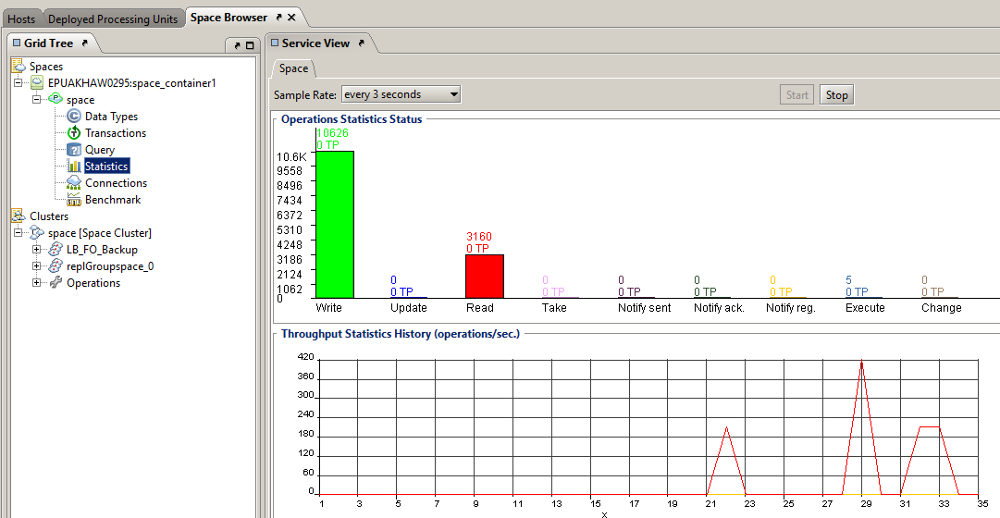

Tableau Integration
This topic describes how to integrate Tableau with in a Microsoft Windows environment using the JDBC connector to retrieve data for visualization and business intelligence needs.
Prerequisites
Your host machine should have the following installed:
- Java 8 or higher
- Tableau version 2019.1 or higher
Integrating Tableau with
In order to integrate Tableau with , you need access to a data grid that has already been deployed. After setting up and starting , you have to add the JDBC connector to the Tableau Drivers folder, and then select it in the Tableau desktop.
Adding the JDBC Connector to Tableau
The first step in the integration is adding the JDBC connector to Tableau. This process is mostly automated with scripts that install and build the necessary components.
To add the JDBC connector to Tableau:
- Run
<XAP_HOME>\bin\insightedge maven install to install the Maven artifacts.
- Run
<XAP_HOME>\insightedge\tools\jdbc\build-jdbc-client.cmd to create the insightedge-jdbc-client.jar file.
- Copy the file to the Tableau Drivers folder.
-
Run the following command to start Tableau with the connector:
<TABLEAU_HOME>\bin\tableau.exe -DConnectPluginsPath=<GS_HOME>\insightedge\tools\jdbc
Configuring Tableau to Access the Data Grid
The second step in the integration process is configuring Tableau to use as the data source, via the JDBC connector.
Configuring the Connection to
To configure the data source:
- Start Tableau.
-
Click Connect in the Tableau desktop, and select Gigaspaces InsightEdge as the data source.

If Gigaspaces InsightEdge does not appear in the Connect menu on first access ,click More and select Gigaspaces InsightEdge from the alphabetic list.
- In the Gigaspaces InsightEdge window, configure the options as follows:
- Type the Server host name or IP address. Include the port number if the Space is not using the default port.
- (Optional) If your system includes AnalyticsXtreme, you can type True for Enable AnalyticsXtreme.
- Type the Space name.
- (Optional) Add Advanced Parameters for the JDBC connection as key-value pairs.
- If your system is configured with a secure Space (See Security), type the Username and Password.
-
Click Sign In.
-
Verify that Tableau can see the Tables in your Space.
Using Tableau to Query the Data Grid
After the connection has been configured, you can execute queries against the data. This section describes a simple example of reading the data and displaying it in a graphic visual format.
Sample Data Set
The example uses the following schema:
Querying the Data Grid
Before performing a query on , you can use the Web Management Console to look at the Space that
contains the sample data. At this point, there have been no read operations.
ED NOTE: Alan, run the demo and take screen caps of the Web Management Console (Web UI) instead of the GigaSpaces Management Center (GS-UI).
Also, why are we providing this at all if we aren't giving them the demo package? Best to just show them the Web Management Console before the read operations, and then Tableau desktop and Web Management Console after the read operation.
To query the data in :
- From the Data tab, drag and drop the Orders and Locations
tables to the data pane.
-
Join the tables as Inner.

-
Below the data pane, select the Sheet1 tab.
-
Select Country and State from the Locations
node.
-
Right-click and select Create Hierarchy from the menu that is displayed.
-
Double-click State.
-
From the Measures area, drag and drop Sales to the
Size option in the Marks card, and Profit to the Color option.
-
View the results in the data pane; you can easily see the sales-profit insight that was derived from the data
retrieved from .

-
In the Web Management Console, view the Space operations statistics. You can see the read operations
that were performed when Tableau accessed to construct the view.
 this isn't the Web UI, it's the GigaSpaces Management Center.
Additional Resources
|
|
|
Predictive Stock Pricing Demo
|